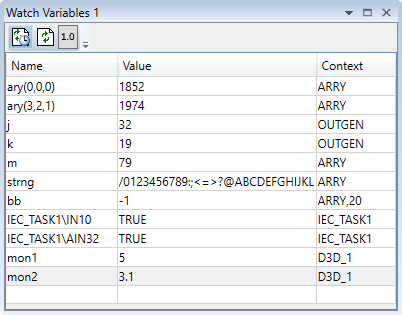
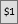
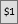

The "Watch Variables" tool allows the user to look at the values of program internal variables and global variables while a program is running or stepping. It can be used to display variables of all types from all runnable program types.
Up to 4 different Watch Windows can be displayed if the Watch Tool is started from Motion Perfect’s main menu. Other means of starting it will only display a single window.
The methods used to add the variables to be watched is covered in the "Program Editor" section under " Watching Variables ".
The entry for each variable contains the name of the variable, its present value (blank if not yet read) and its context. The context is either "VR" denoting a global VR variable or the program name with possibly the process on which it is running. The process number is only displayed if more than one instance of the program is running. A value of “Invalid value” usually denotes that the context is not valid (normally because the program is not running).
The displayed values can be automatically updated
periodically. Periodic updating enabled or disabled by clicking on the
"Toggle Periodic Updating" button (
 when enabled,
when enabled,
 when disabled).
when disabled).
Clicking on the refresh button
 will cause
the values to be updated regardless of the state of periodic updating.
will cause
the values to be updated regardless of the state of periodic updating.
The
 (decimal) or

(hexadecimal)
button indicates the current format used to display integer numbers. Clicking
on the button brings up a drop-down menu to allow the user to change the
format.
(decimal) or

(hexadecimal)
button indicates the current format used to display integer numbers. Clicking
on the button brings up a drop-down menu to allow the user to change the
format.
Values can be edited by double clicking on the value in the grid and pressing the "Return" key. The act of pressing the "Return" key sends the value to the controller.